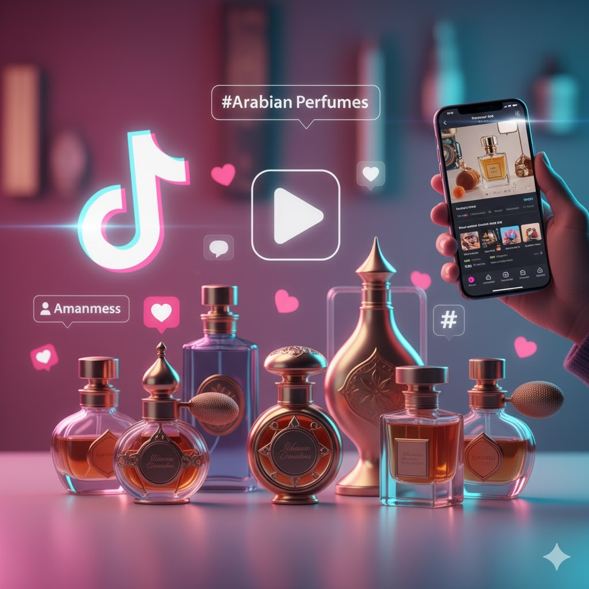

El boom mundial de los perfumes árabes en TikTok
En los últimos años, TikTok se convirtió en el epicentro de nuevas tendencias globales. Entre ellas, los perfumes árabes encontraron un espacio perfecto para crecer: millones de usuarios comparten reseñas, comparaciones y recomendaciones que impulsaron un fenómeno sin precedentes en la industria de la perfumería.

¿Por qué TikTok los volvió virales?
La clave del éxito radica en la rapidez y el formato visual de la plataforma. Videos de 10 a 30 segundos muestran el packaging, la intensidad del aroma, la duración en piel y comparaciones con marcas de lujo. Esto generó una sensación de “descubrimiento” y autenticidad que atrapó a millones de usuarios.
Challenges como “perfumes que huelen a millonario”, “los perfumes árabes que más elogios reciben” o “fragancias que reemplazan a perfumes de diseñador” lograron millones de visualizaciones en poco tiempo.
Un público joven que volvió al perfume
Uno de los efectos más llamativos es que miles de adolescentes y jóvenes adultos redescubrieron la perfumería gracias a TikTok. El contenido dinámico, los precios accesibles y la estética árabe generaron interés en un público que antes no consumía fragancias de manera habitual.
Las marcas más recomendadas por influencers
- Lattafa — la marca más viral, famosa por su intensidad.
- Arabian Oud — lujo accesible con ADN 100% árabe.
- Ard Al Zaafaran — perfecto para quienes comienzan en este mundo.
- Swiss Arabian — mezcla entre tradición y perfumería moderna.
Fragancias que se volvieron iconos virales
Algunos perfumes alcanzaron un estatus legendario dentro de la comunidad tiktokera. Entre los más populares se encuentran:
- Khamrah (Lattafa) — dulce, especiado y comparado con Angel's Share.
- Oud for Glory — un oud intenso que rivaliza con perfumes nicho.
- Velvet Oud — económico, potente y muy recomendado para invierno.
- Asad — conocido como el “Sauvage árabe”.
El impacto en ventas
El auge en redes produjo un crecimiento explosivo. Perfumes que antes pasaban desapercibidos hoy registran aumentos de ventas de entre 200% y 400%. Tiendas físicas y online reportaron quiebres de stock constantes, y Amazon posicionó varios perfumes árabes entre los más vendidos del año.
El papel de la estética árabe
Los envases dorados, las botellas pesadas, las cajas decoradas y el aura de misterio alrededor del oud y el ámbar aportaron un componente visual perfecto para TikTok. El diseño atractivo es clave en un entorno donde todo entra por los ojos.
La clave del fenómeno
El éxito de los perfumes árabes en TikTok se resume en una fórmula simple pero poderosa:
Duración extrema • Precio accesible • Aromas intensos • Estética llamativa
TikTok no solo viralizó productos: transformó el interés global por la perfumería árabe y la puso al mismo nivel que las marcas de diseñador. Lo que empezó como una tendencia terminó convirtiéndose en una revolución olfativa.
← Volver a publicaciones